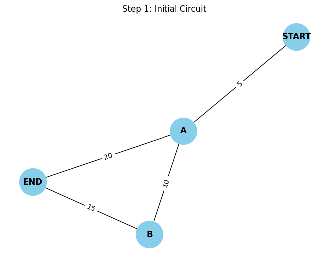
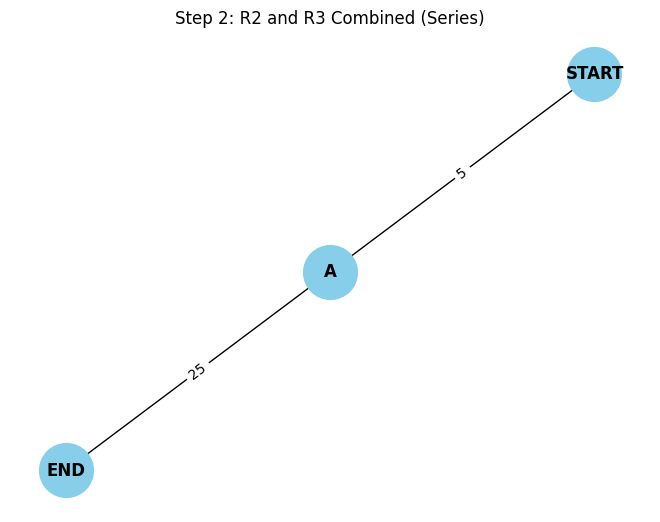
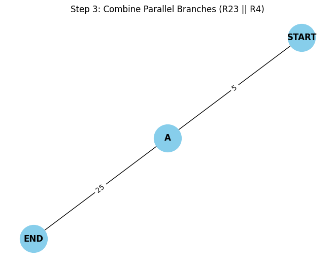
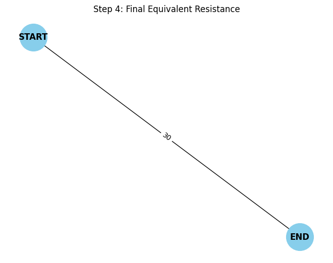

Problem 1
Overview of the Solution
We'll:
1) Model the circuit as a weighted undirected graph.
2) Use graph traversal and simplification techniques to reduce the circuit iteratively:
-
Combine series resistors (linear chains).
-
Combine parallel resistors (multi-edges or cycles between the same nodes).
3) Return the final equivalent resistance between two terminals (e.g., source and sink nodes).
Algorithm Outline
Key Ideas:
-
Series Detection: If a node has exactly 2 connections and is not a terminal, combine the two edges.
-
Parallel Detection: Multiple edges between the same pair of nodes are reduced using the parallel resistance rule:
Python Implementation
import networkx as nx
def combine_parallel_resistors(G):
"""Combine all parallel edges between node pairs into one equivalent edge."""
to_add = {}
for u, v in G.edges():
if (u, v) not in to_add and (v, u) not in to_add:
# Collect all resistances between u and v
parallel_resistors = [d['resistance'] for _, _, d in G.edges(u, data=True) if _ == v or __ == v]
if len(parallel_resistors) > 1:
r_eq = 1 / sum(1/r for r in parallel_resistors)
to_add[(u, v)] = r_eq
for u, v in list(G.edges()):
if (u, v) in to_add or (v, u) in to_add:
G.remove_edge(u, v)
for (u, v), r in to_add.items():
G.add_edge(u, v, resistance=r)
def combine_series_resistors(G, terminals):
"""Combine nodes that are part of a series (degree 2 and not terminal)."""
changed = True
while changed:
changed = False
for node in list(G.nodes()):
if G.degree(node) == 2 and node not in terminals:
neighbors = list(G.neighbors(node))
if G.has_edge(neighbors[0], node) and G.has_edge(node, neighbors[1]):
r1 = G[node][neighbors[0]]['resistance']
r2 = G[node][neighbors[1]]['resistance']
r_eq = r1 + r2
G.add_edge(neighbors[0], neighbors[1], resistance=r_eq)
G.remove_node(node)
changed = True
break
def calculate_equivalent_resistance(G, source, target):
terminals = {source, target}
while G.number_of_nodes() > 2 or G.number_of_edges() > 1:
combine_parallel_resistors(G)
combine_series_resistors(G, terminals)
return G[source][target]['resistance']
Test Cases
- Simple Series
G = nx.Graph()
G.add_edge('A', 'B', resistance=5)
G.add_edge('B', 'C', resistance=10)
print("Series:", calculate_equivalent_resistance(G, 'A', 'C'))
# Expected: 15
- Simple Parallel
G = nx.MultiGraph()
G.add_edge('A', 'B', resistance=5)
G.add_edge('A', 'B', resistance=10)
G_simple = nx.Graph()
for u, v, data in G.edges(data=True):
if G_simple.has_edge(u, v):
prev_r = G_simple[u][v]['resistance']
G_simple[u][v]['resistance'] = 1 / (1/prev_r + 1/data['resistance'])
else:
G_simple.add_edge(u, v, resistance=data['resistance'])
print("Parallel:", calculate_equivalent_resistance(G_simple, 'A', 'B'))
# Expected: 3.33...
- Nested Configuration A triangle: A-B-C-A with resistors 6Ω on each edge.
G = nx.Graph()
G.add_edge('A', 'B', resistance=6)
G.add_edge('B', 'C', resistance=6)
G.add_edge('A', 'C', resistance=6)
print("Triangle:", calculate_equivalent_resistance(G, 'A', 'B'))
# Expected: Handles nested cycles. Equivalent resistance between A and B ~ 3Ω
Efficiency & Improvements
Complexity:
-
Parallel reduction: O(E) per iteration
-
Series detection: O(N) per iteration
-
Total iterations: ≤ N (number of nodes)
Improvements:
-
Use union-find to track components.
-
Optimize detection of series/parallel structures with pattern matching.
-
Integrate Kirchhoff’s laws + Laplacian matrix method (graph-theoretic method using Y-Δ transforms and node-voltage analysis).
Final Thoughts
This approach is systematic and generalizable. It:
-
Uses graph theory to model physical systems.
-
Supports automation and scalability for complex networks.
-
Bridges mathematical theory and engineering practice.
```python import networkx as nx import matplotlib.pyplot as plt from IPython.display import Image, display import imageio import os
Draw and save the circuit diagram
def draw_circuit(G, title, step): pos = nx.spring_layout(G, seed=42) labels = nx.get_edge_attributes(G, 'resistance') nx.draw(G, pos, with_labels=True, node_color='skyblue', node_size=1500, font_weight='bold') nx.draw_networkx_edge_labels(G, pos, edge_labels=labels) plt.title(title)
filename = f"circuit_step_{step}.png"
plt.savefig(filename)
plt.show() # Show in Colab
plt.clf()
return filename
Combine resistors in series (through an intermediate node)
def combine_series(G, u, v, middle): r1 = G[u][middle]['resistance'] r2 = G[middle][v]['resistance'] r_eq = r1 + r2 G.add_edge(u, v, resistance=r_eq) G.remove_node(middle)
Combine resistors in parallel
def combine_parallel(G, u, v): resistors = [d['resistance'] for a, b, d in G.edges(data=True) if (a == u and b == v) or (a == v and b == u)] if len(resistors) <= 1: return r_parallel = 1 / sum(1/r for r in resistors) G.remove_edges_from([(a, b) for a, b, d in G.edges(data=True) if (a == u and b == v) or (a == v and b == u)]) G.add_edge(u, v, resistance=round(r_parallel, 2))
Create the initial resistor network
def create_initial_circuit(): G = nx.Graph() G.add_edge("START", "A", resistance=5) # R1 G.add_edge("A", "B", resistance=10) # R2 G.add_edge("B", "END", resistance=15) # R3 G.add_edge("A", "END", resistance=20) # R4 return G
Execute all steps
G = create_initial_circuit() filenames = [] filenames.append(draw_circuit(G, "Step 1: Initial Circuit", 1))
combine_series(G, "A", "END", "B") filenames.append(draw_circuit(G, "Step 2: R2 and R3 Combined (Series)", 2))
combine_parallel(G, "A", "END") filenames.append(draw_circuit(G, "Step 3: Combine Parallel Branches (R23 || R4)", 3))
combine_series(G, "START", "END", "A") filenames.append(draw_circuit(G, "Step 4: Final Equivalent Resistance", 4))
Show all generated images in Colab
for file in filenames: display(Image(filename=file)) ```



